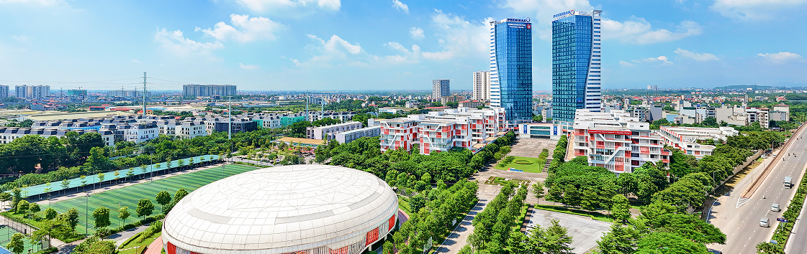

Introduction

As a member of the Phenikaa Group ecosystem, Phenikaa University is a methodical investor and has developed rapidly, quickly becoming an international standard learning and experience environment. After only 6 years of comprehensive and strong structure, on April 15, 2025, according to Decision No. 775/QD-TTg of the Prime Minister, the School officially became Phenikaa University - the first private university in the North to develop according to a smart, innovative, creative, multi-disciplinary, multi-field model.
With nearly 1,200 staff, lecturers and employees; nearly 25,000 students; 140,000m² of green space; a modern lab system, a smart library, comfortable dormitories and a multi-purpose sports complex, Phenikaa creates a comprehensive educational ecosystem, where learning is associated with experience and innovation.
Phenikaa University ecosystem establishes 3 core tasks: Training - Scientific Research - Innovation; which are naturally and organically linked, in which scientific research helps improve the quality of training, innovation helps learners to be equipped with more creative spirit, criticism, innovation and the desire to turn knowledge into solutions, product technology, towards more efficiency and the goal of solving problems of the community, society and country.
In particular, in the field of Health Care, Phenikaa University develops a closed ecosystem model, from training - research - practice, from lecture halls, Research Institutes/Centers to the PhenikaaMec international standard academic healthcare system, including PhenikaaMec Hospitals and Clinics, Pharmaceutical Factory towards EU-GMP standards, bioequivalence center..., contributing to training and providing high-quality human resources, as well as scientific advances for the healthcare industry.